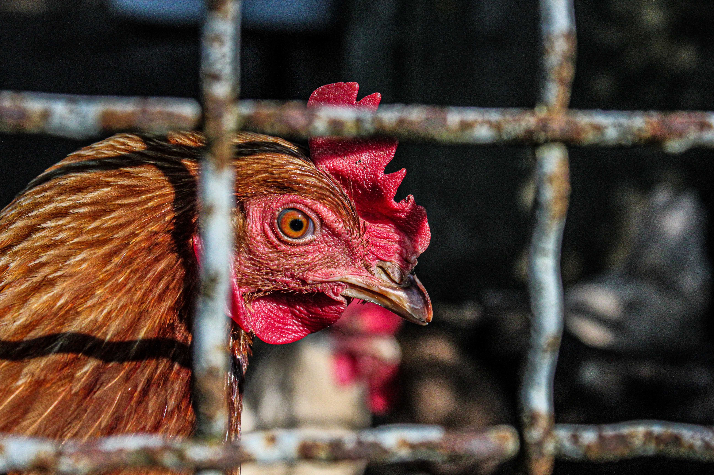

Every hour, 34,000 male chicks are killed. Just because they can't lay eggs.

⚡ $70 million wasted every year — incubating and killing male chicks.
In-ovo sexing eliminates that cost, saves energy, and turns waste into pet food.
🐣 It's a win‑win.
✍️ Be their voice — sign the petition
⬇️ Scroll down for Q&A and what happens after you sign.
🛠️ How to actually solve this
A 3‑step path from awareness to action
1
Push the USDA — Federal policy can ban chick culling or mandate in-ovo sexing. Europe is already moving. The US needs public pressure to catch up.
2
Push large egg corporations — Companies like Cal-Maine Foods buy billions of eggs. If they adopt in-ovo sexing, the entire supply chain shifts. Consumer pressure works.
3
Lease the machines to farms — The equipment is expensive. Farms don't need to buy it — they need to rent it. A service model makes it affordable for everyone.
💡 This is how you turn awareness into change. Sign the petition, share this page, and talk about it.
❓ Q&A
Common questions about chick culling — answered.
They can't lay eggs, and they're not bred to grow fast enough for meat. The egg industry has no use for them, so they are culled as waste.
Two main methods: maceration (high-speed grinding, considered instantaneous) and asphyxiation (CO₂ gas, slower and more controversial). Both are legal and widely used.
Yes. The US has no federal ban on chick culling. Several European countries have banned it — France, Germany, and Italy are leading the shift — but the US still allows it at scale.
Over 300 million male chicks are culled annually in the US alone — about 34,000 per hour. Globally, the number exceeds 6 billion per year.
A technology that determines the sex of a chick before it hatches — within the egg (in-ovo). Male embryos are identified early and discarded before they develop consciousness, avoiding the hatching-and-killing cycle.
It's done at day 8–13 of incubation. Scientific consensus is that embryos at this stage cannot feel pain (no functional nervous system). It's considered more humane than letting them hatch and be macerated or suffocated.
Cost and scaling. The technology is newer and more expensive than traditional culling. But as it becomes cheaper — and as consumer pressure grows — the industry is beginning to shift. Change is accelerating.
Sign the petition above, share this page, and talk about it. Public pressure pushes companies to adopt in-ovo sexing faster. One minute, one click — you change their future.